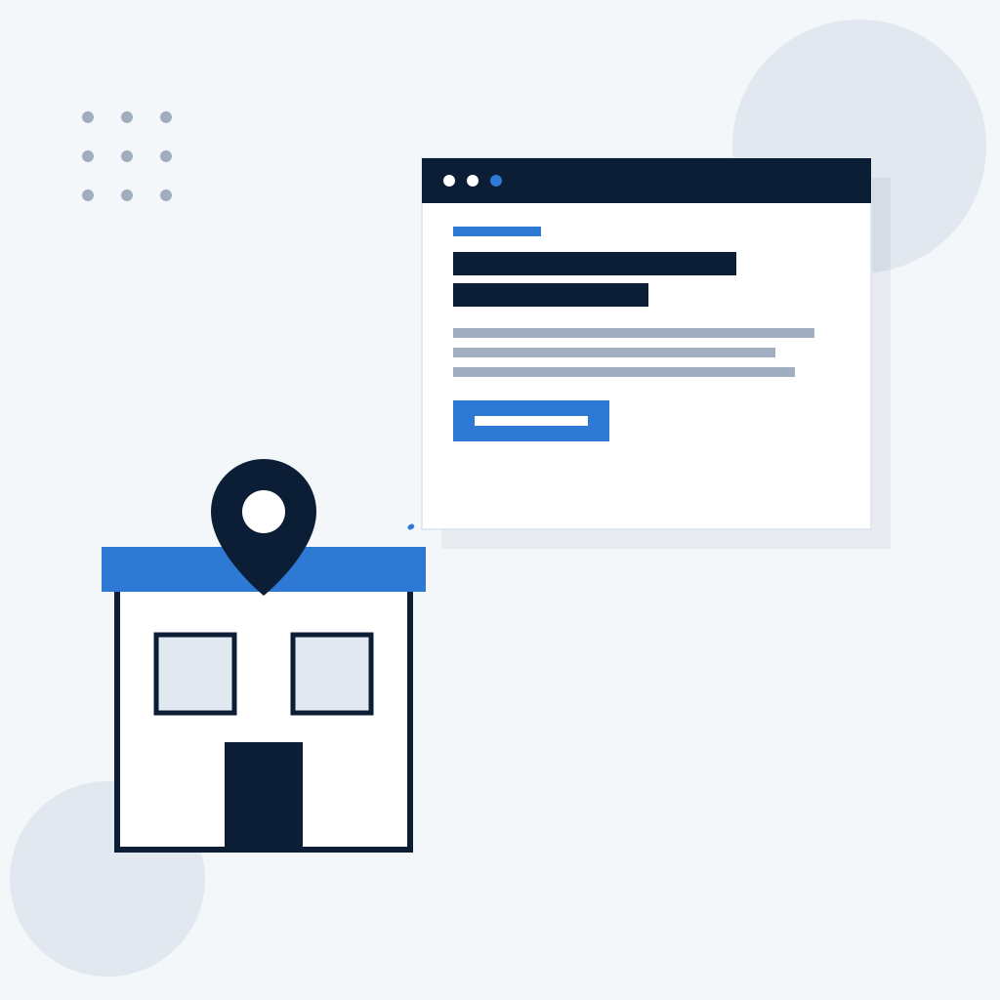

Sites
Para quem não é encontrado no Google ou tem um site que não gera contato.
- Página de vendas
- Site institucional
- Loja virtual
Funcionam bem no celular, têm botão de WhatsApp e vêm configurados para aparecer no Google.
Nortis Analytics
Sites, aplicativos, inteligência artificial e chatbots para pequenas e médias empresas. Seu cliente encontra você no Google, pode ser atendido a qualquer hora e sua equipe para de repetir tarefa manual.

O dia a dia
Serviços
Você pode começar por qualquer uma delas e combinar as outras quando fizer sentido.
Para quem não é encontrado no Google ou tem um site que não gera contato.
Funcionam bem no celular, têm botão de WhatsApp e vêm configurados para aparecer no Google.
Para o que hoje roda em papel, planilha ou mensagem perdida no WhatsApp.
Funcionam direto no celular e no computador, sem precisar baixar.
Para tirar o trabalho repetitivo das mãos da equipe.
A decisão continua com uma pessoa da sua empresa.
Atendimento automático que entende o que o cliente escreve, no WhatsApp, no site e no Instagram.
Quando o cliente precisa de uma pessoa, a conversa passa para você ou sua equipe.
Toda solução pode ter acompanhamento mensal: manutenção, ajustes e um relatório com os números do que ela está trazendo.
Como funciona
Gratuita, 30 minutos. Entendemos o seu negócio e o que precisa ser resolvido.
Em até 2 dias úteis, com solução, prazo e investimento claros.
Você aprova cada etapa.
Tudo no ar, funcionando e em seu nome.
Manutenção, ajustes e relatório mensal.
Diferencial
Site, aplicativo, chatbot e automação com inteligência artificial com um único responsável. Você não precisa contratar quatro fornecedores.
Você fala com o Ítalo, fundador e responsável técnico, não com um atendente ou intermediário.
Valores pensados para a realidade da pequena e média empresa, com contrato, prazo e suporte.
Toda entrega vem com medição de visitas, contatos, atendimentos e horas economizadas. Você sabe se valeu o investimento.
Planos mensais para manter, ajustar e melhorar a solução. A Nortis não entrega e some.
A tecnologia é explicada pelo que muda no seu negócio, sem termos técnicos.
Mais completo que um criador de site, mais confiável que um freelancer barato e mais acessível que uma agência.
Para quem é
Agendamento automático pelo WhatsApp e site para ser encontrado.
Agenda de horários sem atendimento manual.
Site para aparecer no Google e triagem automática de contatos.
Catálogo de imóveis e respostas automáticas às perguntas repetidas.
Cardápio digital e pedidos organizados pelo WhatsApp.
Site ou loja virtual para vender além da loja física.
Orçamentos montados com inteligência artificial e catálogo online.
Aplicativo de pedidos para representantes e área do cliente.
Página de vendas com botão de WhatsApp, para não depender só de indicação.
Matrícula pelo chatbot e área do aluno.
Atendemos qualquer negócio que precise de uma solução digital. Se o seu segmento não está aqui, a conversa é a mesma.
Exemplos de uso
O paciente agenda sozinho pelo WhatsApp, a qualquer hora.
O cliente encontra sua loja no Google e chama direto no WhatsApp.
O orçamento que levava uma hora fica pronto em minutos.
O representante faz o pedido no celular, sem papel.
Exemplos de como a solução funciona. Não são casos de clientes.
Trabalho realizado
Site para uma casa de temporada. A proprietária queria receber reservas sem depender de plataforma que cobra comissão. Criamos um site próprio com fotos do espaço, informações da casa e botão direto para o WhatsApp.
Sobre
A Nortis Analytics é uma empresa de tecnologia criada pelo Ítalo para colocar soluções digitais de qualidade ao alcance da pequena e média empresa. Você fala direto com quem constrói, do primeiro contato ao acompanhamento.
O "Analytics" do nome significa que toda entrega vem com medição: você sabe o que o site, o chatbot ou a automação está trazendo.
Domínio, hospedagem e acessos ficam sempre em seu nome. Atendemos a partir de Minas Gerais, para todo o Brasil, de forma remota.
Perguntas frequentes
Não. Você participa da conversa inicial e aprova cada etapa. O resto fica com a gente, e explicamos tudo sem termos técnicos.
O Instagram é ótimo para relacionamento, mas quem procura o seu serviço no Google não encontra o seu perfil. E o perfil não é seu: uma mudança na plataforma ou uma conta bloqueada pode levar tudo embora. O site é um endereço que é seu e trabalha junto com o Instagram.
Dá, e para algumas empresas isso basta. A questão é o seu tempo: montar, escrever, configurar para aparecer no Google e manter atualizado. Nós entregamos pronto, pensado para trazer cliente, e cuidamos da manutenção. Você continua focado no negócio.
Esse risco existe quando o atendimento automático é mal configurado. O chatbot que montamos responde as perguntas repetitivas, como horário, preço e agendamento, e passa para você ou sua equipe sempre que o cliente precisa falar com uma pessoa. O cliente tem resposta mesmo fora do horário, em vez de ficar esperando.
Faz sentido ter esse cuidado. Você decide exatamente quais informações a inteligência artificial usa. Trabalhamos sob contrato de confidencialidade e dentro da LGPD. A IA entra para tirar trabalho manual do caminho, e as decisões continuam com você.
Isso é comum quando o site é só uma vitrine parada. A diferença está em pensar o site para gerar contato, com WhatsApp em destaque e configuração para aparecer no Google, e em medir o que ele traz. Com o acompanhamento mensal, ajustamos o que não estiver funcionando.
Pergunta justa. Por isso domínio, hospedagem e acessos ficam sempre em seu nome. Você é dono do que foi construído. E uma operação enxuta significa falar direto com quem faz, sem intermediário.
Sem problema. Podemos escrever os textos, com um acréscimo informado na proposta, e orientar como tirar boas fotos com o celular. Muitos projetos começam assim.
Depende do que precisa ser resolvido. Depois da conversa inicial, você recebe em até 2 dias úteis uma proposta com solução, prazo e investimento claros. Custos de terceiros, como domínio e hospedagem, aparecem separados. Dá para começar por uma versão menor e crescer depois.
Estamos em Minas Gerais, mas atendemos empresas de todo o Brasil, de forma remota.
Conversa inicial gratuita de 30 minutos. Você explica como funciona hoje e nós mostramos o que dá para resolver.
Agendar conversa inicial